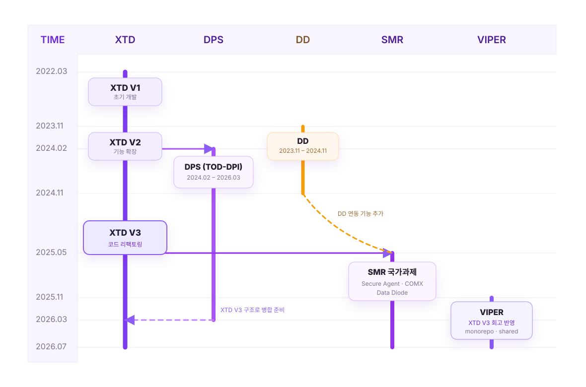

나온웍스.
나온웍스에서 폐쇄망 환경의 OT 보안 제품 웹 관리 콘솔을 개발하며,
성과를 인정받아 입사 3년 차에
조기 승진했습니다.
4년 반의 개발 경험을 프로젝트별 타임라인으로 정리했습니다.

게으르기 위해 부지런한 개발자가 되고 싶은 5년 차 풀스택
엔지니어입니다.
폐쇄망 환경에서 엄격한 보안 요구사항을 충족해야 하는 OT 보안 제품의
웹 관리 콘솔을 개발합니다.
나온웍스에서 폐쇄망 환경의 OT 보안 제품 웹 관리 콘솔을 개발하며,
성과를 인정받아 입사 3년 차에
조기 승진했습니다.
4년 반의 개발 경험을 프로젝트별 타임라인으로 정리했습니다.

프로젝트의 초기 단계부터 풀스택 개발 및 배포까지 완수했습니다.
TypeScript, React, Next.js, Node.js/Express, Zustand, TanStack Query, MariaDB, InfluxDB, Highcharts, Tailwind CSS, Shadcn/UI
XTD를 개발하며 느낀 아쉬운 점들을 신규 프로젝트의 초기 설계부터 반영해, 풀스택 개발과 배포까지 완료했습니다.
TypeScript, React, Next.js, Node.js/Express, Zustand, TanStack Query, MariaDB, Kysely, Chart.js, Tailwind CSS, Shadcn/UI
XTD V3에서 분기한 SMR 제품의 신규 자산 및 취약점 관리 기능을 풀스택으로 개발했습니다.
TypeScript, React, Next.js, Node.js/Express, MariaDB, R-VAT, SBOM/CVE
DNP3·Modbus 등 산업용 프로토콜의 탐지·차단 정책을 관리하는 OT DPI 콘솔을 개발했습니다.
React, Next.js, Node.js/Express, MariaDB, Highcharts, DNP3, Modbus
보안 제품의 웹 응답 성능 시험과 인증 전 회귀 점검을 자동화했습니다.
Playwright, TypeScript, ExcelJS, Navigation Timing API
산업용 보안 어플라이언스의 네트워크·시스템 설정 관리 콘솔을 Vue·Kotlin 기반으로 풀스택 개발했습니다.
Vue 3, Quasar, TypeScript, Kotlin, Spring Boot WebFlux, jOOQ/R2DBC
TypeScript, React, Next.js, App Router, Vue 3, TanStack Query, Zustand, react-hook-form, Zod
Node.js, Express, Kotlin, Spring WebFlux, JWT, MariaDB/MySQL, Sequelize, Kysely, InfluxDB, Redis, DB migration
GS/CC/중국 공안 인증 대응, ISO 27001 심사 준비, AppScan/Acunetix 취약점 개선, server-side validation, API allowlist, RBAC, security headers, TLS, audit log masking
SSE, WebSocket, HTTP/2 proxy, Highcharts, Playwright, BVT, E2E Test, Jest, ExcelJS, Jenkins CI